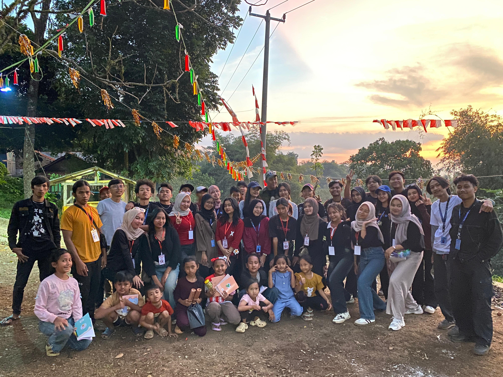
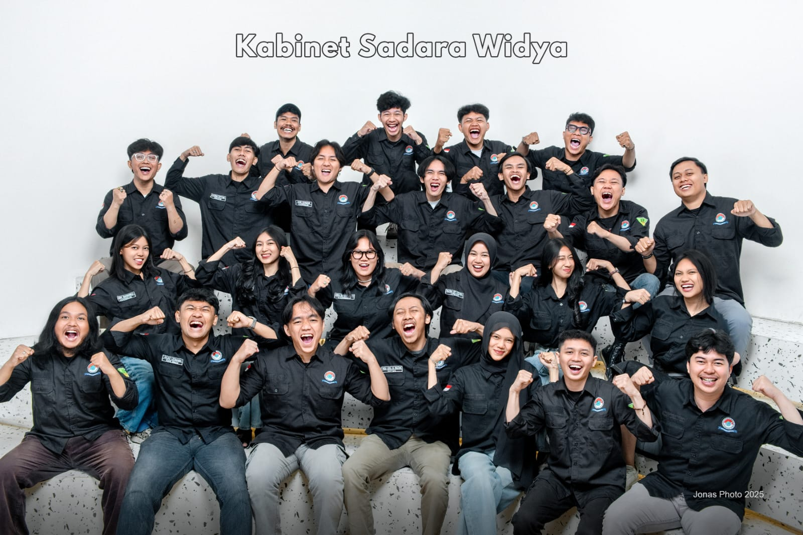
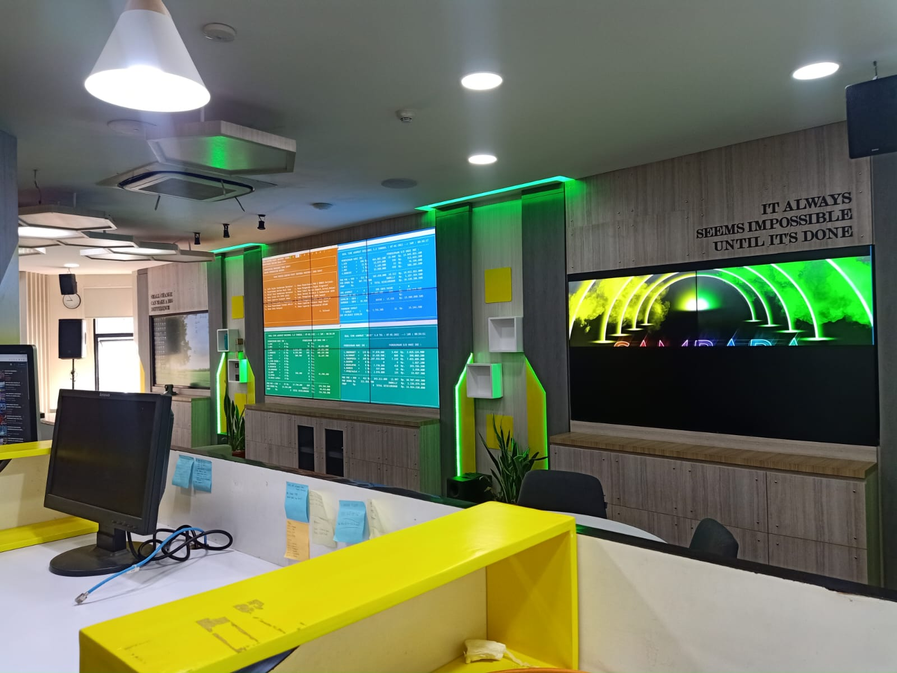
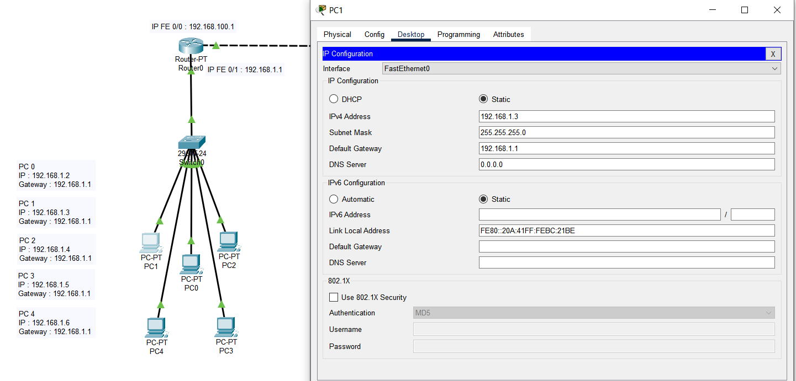

Website Kantin QR Code
Proyek tugas besar berupa website kantin berbasis QR Code dengan PHP dan framework Laravel.
Lihat Detail
Proyek tugas besar berupa website kantin berbasis QR Code dengan PHP dan framework Laravel.
Lihat Detail
Proyek pengembangan aplikasi mobile menggunakan Flutter dan bahasa pemrograman Dart.
Lihat Detail
Dokumentasi tampilan antarmuka proyek Shoppe berdasarkan gambar hasil pekerjaan yang tersedia.
Lihat DetailKarya video dari masa pendidikan Teknik Komputer dan Jaringan yang ditampilkan sebagai dokumentasi multimedia.
Lihat Detail
Dokumen Software Requirement Specification untuk aplikasi perpustakaan berbasis web dengan peran Admin dan Pustakawan.
Lihat Detail
Dokumentasi kegiatan Kuliah Kerja Nyata Mahasiswa selama masa perkuliahan.
Lihat Detail
Dokumentasi pengalaman di bidang Infrastruktur IT dan pengembangan sistem informasi.
Lihat Detail
Dokumentasi kontribusi dalam Divisi Creative dan kegiatan SARASEHAN Divisi Lapangan.
Lihat Detail
Dokumentasi praktik dan pembelajaran bidang Teknik Komputer dan Jaringan di SMK Negeri 13 Bandung.
Lihat Detail
Dokumentasi UJIKOM jurusan Teknik Komputer dan Jaringan yang diselesaikan pada tahun 2022.
Lihat DetailBelum ada item pada kategori ini.